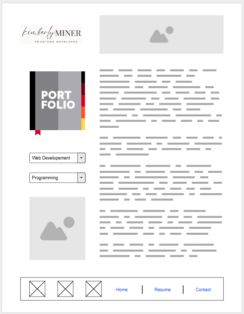

My Virtual Portfolio
This page will host links to projects created in school.
They can find information about my education, certifications, and training. Highlighting my what I know helps visitors determine whether or not I possess the skills for their needs. Obviously, my qualifications and personal page will grow as I continue my educational path.
Visitors may be interested in the types of projects I have completed. I may include projects with links to live websites which can help them understand the depth and breadth of my work.
They may want to assess my skills and qualifications to determine whether I have the expertise they are seeking. They also may spend time reviewing my project portfolio, download a copy of my resume and have the ability to contact me through easily accessible information, such as an email address or contact form.
